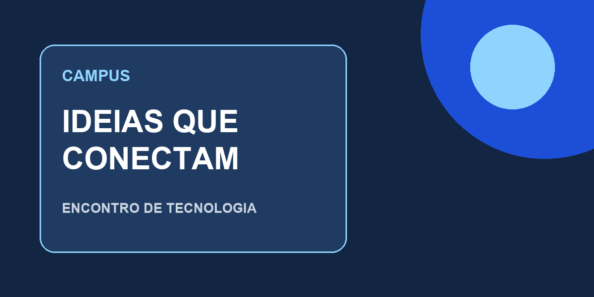

OFICINA • TECNOLOGIA
Encontro de Tecnologia
Data: 21 de outubro de 2026, às 19h
Local: Auditório do campus
Uma conversa sobre aplicativos, criatividade e soluções para o dia a dia.
Manual completo para sair da tela inicial do Expo e construir um cartão de evento com imagem, estilos e interação no celular.
InicianteJavaScript · App.js · ExpoProfessor Edilberto FirminoNa primeira prática, você preparou o ambiente e abriu uma tela simples. Agora vai transformar essa base em uma tela de apresentação de um evento fictício, usando React Native, Expo e JavaScript.
Ao final, você deverá identificar componentes, organizar estilos, exibir uma imagem local, passar dados por propriedades e responder ao toque em um botão. A prática pode ser individual ou em dupla.
Conheça o encontro e experimente a interação.

Data: 21 de outubro de 2026, às 19h
Local: Auditório do campus
Uma conversa sobre aplicativos, criatividade e soluções para o dia a dia.
Evento fictício para fins didáticos.
A representação acima é uma prévia HTML do resultado, não o aplicativo React Native. Toque no botão para conhecer a mensagem de simulação. A aparência do alerta real depende da plataforma.
Escopo: uma tela, um cartão e uma interação. Não há inscrição real, envio de dados, login, banco de dados ou navegação nesta prática.
Voltar ao roteiro ↑| Etapa | O que você fará | Resultado |
|---|---|---|
| Preparar | Conferir ferramentas e escolher o projeto. | Tela inicial abre no aparelho. |
| Construir | Criar três arquivos e copiar a imagem. | Cartão do evento aparece. |
| Entender | Relacionar JSX, dados, props, estilos e eventos. | Explica o funcionamento do botão. |
| Personalizar | Alterar evento, cores e identificação. | Tela própria e legível. |
| Verificar | Testar toque, rolagem e fonte ampliada. | Entrega com evidências reais. |
Sugestão para um encontro de duas horas: 15 minutos de retomada, 20 de preparação, 40 de construção, 25 de personalização e 20 de testes e explicação. Instalações demoradas podem exigir preparação anterior.
Voltar ao roteiro ↑node --version
npm --versionO projeto encontrado na primeira prática usa Expo SDK 57. A tabela oficial desse SDK informa Node.js mínimo 22.13.x. Se criar outro SDK, confira o requisito correspondente. Não altere as versões do projeto apenas para reproduzir um número deste manual.
expo-cli. Android Studio é opcional quando você usa celular com Expo Go. O computador e o celular precisam conseguir se comunicar pela rede.Faça uma cópia de segurança de App.js e de outros arquivos que pretende substituir, fora da pasta do projeto. Abra minhas-tarefas-expo no VS Code. No terminal da pasta INBEC:
cd minhas-tarefas-expo
npm installnpm install recupera dependências a partir do projeto; é útil quando elas ainda não estão instaladas. Se você já está dentro da pasta do aplicativo, não execute o cd novamente.
No terminal de sua pasta de trabalho, execute:
npx create-expo-app@latest eventos-campus --template blank
cd eventos-campusSe o npm solicitar autorização para baixar o gerador, responda y e aguarde o término. Abra a pasta eventos-campus no VS Code por Arquivo → Abrir Pasta.
blank em JavaScript, com App.js. Se seu projeto tem src/app, arquivos .tsx ou Expo Router, peça orientação antes de copiar: a entrada é diferente. A pasta do manual aula-pratica-2 não é a raiz de um aplicativo Expo.Dentro da pasta que contém o package.json do aplicativo, execute:
npx expo install react-native-safe-area-context expo-status-bar| Biblioteca | Por que usamos |
|---|---|
| react-native-safe-area-context | Reserva áreas ocupadas por recortes e barras do sistema. |
| expo-status-bar | Configura o estilo visual da barra de status. |
Use expo install para resolver versões adequadas ao SDK. O gerador já inclui React, React Native e Expo; não instale esses pacotes separadamente. AsyncStorage não é necessário nesta aula.
npx expo start --goexpo em package.json e a compatibilidade do Expo Go em expo.dev/go. Se houver incompatibilidade, alinhe o SDK e o aplicativo com o professor. Não atualize pacotes isolados por tentativa.No explorador do VS Code, crie a pasta components e os arquivos abaixo. A estrutura final dentro do seu aplicativo será:
seu-projeto/
├── App.js
├── styles.js
├── components/
│ └── CartaoEvento.js
├── assets/
│ └── evento.png
├── app.json
├── index.js
└── package.jsonBaixar evento.png. Salve a imagem na pasta assets do aplicativo com esse nome exato. Se o navegador abrir a imagem, use Salvar imagem como. Confira se não ficou evento.png.png.
Os três arquivos completos também estão na pasta exemplo deste material. Copie-os para os mesmos caminhos relativos no aplicativo; copie a imagem para assets/evento.png. A pasta exemplo contém apenas os arquivos da aula, sem instalação independente.
| Arquivo | Responsabilidade |
|---|---|
| App.js | Dados do evento, mensagem do botão e composição da tela. |
| components/CartaoEvento.js | Cartão que recebe dados e uma função. |
| styles.js | Objetos com estilos compartilhados. |
| assets/evento.png | Imagem local incluída no aplicativo. |
index.js, app.json e package.json gerados pelo Expo. Não substitua essas configurações por arquivos de outro SDK. O index.html que você está lendo é material de apoio; a tela nativa será feita em JSX.Substitua o conteúdo de App.js pelo código abaixo. O objeto evento concentra as informações fictícias; mostrarInteresse é a função acionada pelo cartão.
import { Alert, Platform, ScrollView, Text, View } from 'react-native';
import { StatusBar } from 'expo-status-bar';
import { SafeAreaProvider, SafeAreaView } from 'react-native-safe-area-context';
import CartaoEvento from './components/CartaoEvento';
import styles from './styles';
const evento = {
nome: 'Encontro de Tecnologia',
data: '21 de outubro de 2026, às 19h',
local: 'Auditório do campus',
descricao: 'Uma conversa sobre aplicativos, criatividade e soluções para o dia a dia.',
imagem: require('./assets/evento.png'),
};
export default function App() {
function mostrarInteresse() {
const mensagem = `Você demonstrou interesse em ${evento.nome}. Esta é uma simulação: nenhuma inscrição foi enviada.`;
if (Platform.OS === 'web') {
globalThis.alert(mensagem);
return;
}
Alert.alert('Interesse demonstrado', mensagem, [{ text: 'Entendi' }]);
}
return (
<SafeAreaProvider>
<SafeAreaView style={styles.safe}>
<StatusBar style="dark" />
<ScrollView contentContainerStyle={styles.pagina}>
<View style={styles.conteudo}>
<Text style={styles.etiqueta}>EVENTOS DO CAMPUS</Text>
<Text style={styles.titulo}>Vamos aprender juntos?</Text>
<Text style={styles.introducao}>Conheça o encontro e toque no botão para experimentar a interação.</Text>
<CartaoEvento evento={evento} onInteresse={mostrarInteresse} />
<Text style={styles.rodape}>Atividade prática 2 • Professor Edilberto Firmino</Text>
<Text style={styles.aviso}>Evento fictício para fins didáticos.</Text>
</View>
</ScrollView>
</SafeAreaView>
</SafeAreaProvider>
);
}
Crie este arquivo dentro de components. Ele recebe evento e onInteresse por props. O botão usa a função recebida, e os textos usam os dados do evento.
import { Image, Pressable, Text, View } from 'react-native';
import styles from '../styles';
export default function CartaoEvento({ evento, onInteresse }) {
return (
<View style={styles.cartao}>
<Image
source={evento.imagem}
style={styles.imagem}
resizeMode="cover"
accessibilityLabel="Ilustração de um encontro de tecnologia"
/>
<View style={styles.detalhes}>
<Text style={styles.categoria}>OFICINA • TECNOLOGIA</Text>
<Text style={styles.nome}>{evento.nome}</Text>
<Text style={styles.informacao}>Data: {evento.data}</Text>
<Text style={styles.informacao}>Local: {evento.local}</Text>
<Text style={styles.descricao}>{evento.descricao}</Text>
<Pressable
onPress={onInteresse}
accessibilityRole="button"
accessibilityLabel={`Demonstrar interesse em ${evento.nome}`}
style={({ pressed }) => [styles.botao, pressed && styles.botaoPressionado]}
>
<Text style={styles.textoBotao}>Tenho interesse</Text>
</Pressable>
</View>
</View>
);
}
Crie styles.js na raiz, ao lado de App.js. Os nomes dos estilos correspondem aos nomes utilizados nos dois componentes.
import { StyleSheet } from 'react-native';
export default StyleSheet.create({
safe: { flex: 1, backgroundColor: '#eff6ff' },
pagina: { padding: 24, flexGrow: 1 },
conteudo: { width: '100%', maxWidth: 680, alignSelf: 'center' },
etiqueta: { color: '#1d4ed8', fontSize: 12, fontWeight: '700', marginBottom: 12 },
titulo: { fontSize: 30, fontWeight: '700', color: '#122542', marginBottom: 12 },
introducao: { fontSize: 16, lineHeight: 24, color: '#475569', marginBottom: 24 },
cartao: { backgroundColor: '#fff', borderRadius: 18, overflow: 'hidden', borderWidth: 1, borderColor: '#dbe4ef' },
imagem: { width: '100%', aspectRatio: 2 },
detalhes: { padding: 20, gap: 12 },
categoria: { fontSize: 12, color: '#1d4ed8', fontWeight: '700' },
nome: { fontSize: 24, fontWeight: '700', color: '#122542' },
informacao: { fontSize: 16, lineHeight: 24, color: '#334155' },
descricao: { fontSize: 16, lineHeight: 24, color: '#475569' },
botao: { backgroundColor: '#1d4ed8', borderRadius: 10, minHeight: 48, padding: 14, alignItems: 'center', justifyContent: 'center', marginTop: 4 },
botaoPressionado: { opacity: 0.7 },
textoBotao: { color: '#fff', fontSize: 16, fontWeight: '700', textAlign: 'center' },
rodape: { fontSize: 14, lineHeight: 22, color: '#475569', textAlign: 'center', marginTop: 24 },
aviso: { fontSize: 12, color: '#475569', textAlign: 'center', marginTop: 8 },
});
Salve os três arquivos e confira se a imagem está no caminho correto antes de analisar erros de importação.
Voltar ao roteiro ↑| Conceito | Onde aparece | O que significa |
|---|---|---|
| JSX | Blocos dentro de return | Descreve a árvore da interface no JavaScript. |
| View | Conteúdo e cartão | Agrupa elementos e organiza o layout. |
| Text | Títulos e informações | Exibe conteúdo textual; não deixe texto solto em View. |
| Image | Topo do cartão | Exibe a imagem indicada em source. |
| Pressable | Tenho interesse | Responde ao toque e informa se está pressionado. |
| ScrollView | Tela principal | Permite alcançar conteúdo maior que a altura disponível. |
| Props | evento e onInteresse | Dados e função enviados de App para CartaoEvento. |
| StyleSheet.create | styles.js | Organiza estilos em objetos JavaScript. |
| SafeAreaProvider / SafeAreaView | Raiz da tela | Fornecem contexto e espaçamento para áreas seguras. |
| Platform e Alert | mostrarInteresse | Selecionam a mensagem adequada ao ambiente de execução. |
Você toca no Pressable → ele chama onInteresse → essa prop aponta para mostrarInteresse → a função monta a mensagem com evento.nome → o sistema mostra um alerta.
// Correto: entrega a função para ser chamada no toque.
onPress={onInteresse}
// Evite: chama a função enquanto o componente é renderizado.
onPress={onInteresse()}As chaves em {evento.nome} inserem um valor JavaScript no JSX. O require('./assets/evento.png') usa um caminho literal relativo ao App.js. No cartão, ../styles sobe uma pasta até a raiz.
padding cria espaço interno; marginBottom separa um elemento do próximo; gap separa os filhos do contêiner. flex: 1 faz a área principal ocupar o espaço disponível. maxWidth limita a largura de leitura, e alignSelf: 'center' centraliza o conteúdo em telas largas.
A imagem usa largura de 100% e proporção 2:1. O cartão não tem altura fixa, permitindo que textos cresçam. A opacidade do botão muda durante o toque; isso não registra interesse nem altera um estado persistente.
Voltar ao roteiro ↑npx expo start --gor no terminal ou reinicie com npx expo start --clear.Na raiz do aplicativo, instale o suporte web e inicie:
npx expo install react-dom react-native-web @expo/metro-runtime
npx expo start --webUse o endereço mostrado no terminal. Reduza e aumente a janela para observar o cartão. O exemplo inclui uma mensagem para web, mas áreas seguras e comportamento de toque precisam ser conferidos no aparelho.
a para abrir no Android. Aguarde a inicialização e siga as mensagens do Expo.Prepare o emulador antes da aula: o download e a primeira inicialização podem demorar. Consulte o guia oficial de configuração Android. Simulador iOS exige macOS e Xcode.
Se a rede impedir a comunicação, pare Metro com Ctrl+C e tente:
npx expo start --go --tunnelO túnel exige internet, pode solicitar instalação de uma dependência e pode ser mais lento. Escaneie o novo QR code. Se não funcionar, registre o erro e use a alternativa disponível com o professor.
Voltar ao roteiro ↑Faça uma mudança por vez, preveja o resultado e confira depois de salvar.
'#166534'. Preserve texto legível.Crie outro objeto de evento no App.js, com nome, data, local, descricao e imagem. Renderize outro CartaoEvento passando esse objeto. Para que a mensagem use o nome correto, faça mostrarInteresse receber o evento selecionado e passe uma função como onInteresse={() => mostrarInteresse(outroEvento)}. Ajuste também o primeiro cartão para passar seu evento. Use uma View com gap para separar os cartões.
| Sintoma | O que conferir |
|---|---|
| node ou npm não reconhecido | Instalação, PATH e reabertura do terminal. |
| PowerShell bloqueia npm.ps1 | Use npm.cmd / npx.cmd no lugar de npm / npx, ou escolha o terminal Prompt de Comando no VS Code. Não é preciso mudar a política global para acompanhar a aula. |
| package.json não encontrado | Abra o terminal na pasta do aplicativo, não na pasta do manual. |
| Unable to resolve ./components/CartaoEvento | Nome da pasta, nome do arquivo, maiúsculas e importação. |
| Unable to resolve ../styles | styles.js deve estar na raiz; o cartão fica em components. |
| Unable to resolve ./assets/evento.png | Imagem baixada no local correto, extensão e nome exatos. |
| Tela vermelha com erro de sintaxe | Leia a primeira mensagem; confira aspas, vírgulas, chaves, imports e fechamento das tags. Não copie as cercas de código. |
| Botão abre alerta sem toque | Use onPress={onInteresse}, sem executar a função no JSX. |
| QR code não conecta | Servidor aberto, rede, VPN, firewall e compatibilidade do Expo Go; tente túnel. |
| Project is incompatible | Confira o SDK em package.json e a versão suportada pelo Expo Go. |
| Conteúdo encoberto ou cortado | Confira SafeAreaProvider, SafeAreaView e ScrollView; remova alturas fixas adicionadas. |
| Web pede bibliotecas adicionais | Execute a instalação da seção 12 e reinicie Metro. |
Para conferir dependências sem aplicar correções automáticas:
npx expo-doctor@latest
npx expo install --checkLeia o diagnóstico com o professor. Corrija o problema apontado antes de instalar novas versões. Registre a mensagem exata, o arquivo afetado e a ação que resolveu.
Voltar ao roteiro ↑Situação: sua equipe precisa apresentar uma oficina, palestra ou encontro fictício em uma tela para celular.
Envie App.js, styles.js, components/CartaoEvento.js, a imagem utilizada, package.json e package-lock.json; duas capturas (tela e mensagem do botão); as respostas e um registro de dificuldade ou verificação realizada. Identifique se as capturas vieram de celular, emulador ou navegador. Não é necessário enviar node_modules.
O professor define o prazo e a pontuação. Se não houver aparelho disponível, registre a execução web e deixe o teste nativo identificado como pendente.
Voltar ao roteiro ↑| Teste | Resultado esperado |
|---|---|
| Abrir a tela | Imagem, nome, data, local, descrição e rodapé aparecem. |
| Tocar no botão | Mensagem inclui o nome correto e o aviso de simulação. |
| Fechar a mensagem | Retorna à mesma tela sem inscrição real. |
| Trocar o nome e salvar | Cartão e próxima mensagem usam o novo nome. |
| Descrição longa / tela pequena | Conteúdo pode ser alcançado por rolagem. |
| Aumentar a fonte no sistema | Textos quebram linha; botão continua alcançável. |
| Janela web larga e estreita | Conteúdo acompanha a largura e respeita o limite. |
| Recortes e barras no celular | Nenhum controle essencial fica encoberto. |
Registre cada teste como realizado ou pendente, incluindo plataforma, resultado e ajuste necessário. A imagem é local e não exige um servidor de imagens; Expo Go ainda pode precisar da conexão com Metro para carregar o projeto.
Os marcadores servem para acompanhar esta leitura e são reiniciados quando a página é recarregada.
Voltar ao roteiro ↑Salve os arquivos e pare o servidor com Ctrl+C. Preserve a pasta completa do aplicativo. Para retomar:
cd eventos-campus
npx expo start --goSe continuou a primeira prática, use cd minhas-tarefas-expo no lugar de eventos-campus. Se já estiver na raiz do app, execute apenas o segundo comando. Em outro computador, instale dependências com npm install antes de iniciar.
Você construiu uma tela com componente reutilizável e interação simples. Essa base permite aprofundar layout, estado, formulários e navegação em encontros posteriores. Não é preciso gerar APK para concluir esta aula.
Voltar ao roteiro ↑Referências consultadas em 14/10/2026. O projeto disponível da primeira prática usa SDK 57; a versão de um projeto criado com latest pode mudar. Confira sempre a documentação correspondente ao seu package.json.
O manual e a imagem podem ser consultados offline. Criação do projeto, instalação e serviços de conexão precisam de internet. A prévia é ilustrativa; o professor deve ensaiar a execução nativa no ambiente da turma.
Voltar ao roteiro ↑